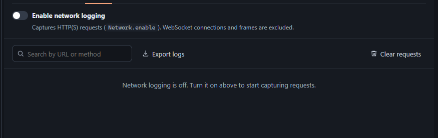
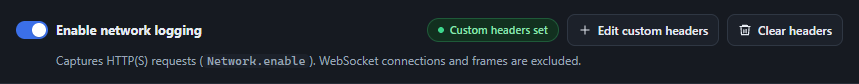
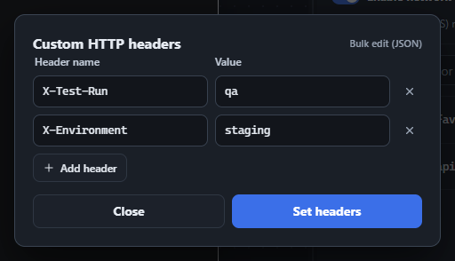
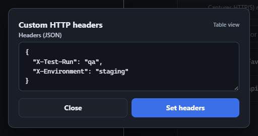
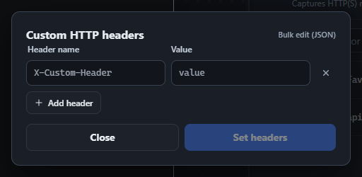
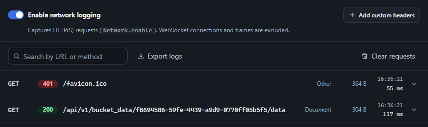
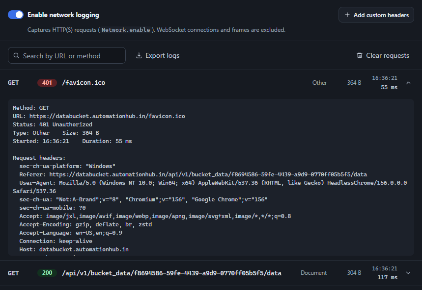

Network and custom headers
The Network tab captures every HTTP(S) request the attached page makes and shows it as a row - method, status, endpoint, resource type, size, start time, and duration - built live from CDP’s Network.requestWillBeSent, responseReceived, loadingFinished, and loadingFailed events. WebSocket connections and frames are deliberately excluded - this tab is for REST/API/asset traffic.
Logging is off by default. Flip the switch at the top to send Network.enable and start capturing; flipping it off sends Network.disable and marks any still-in-flight request as canceled rather than leaving it stuck “pending” forever.

Custom HTTP headers
Section titled “Custom HTTP headers”Custom headers are managed in the Network tab. Once network logging is enabled, Add custom headers opens the editor. Click Set headers to apply extra headers to subsequent requests through Network.setExtraHTTPHeaders.
- Turn on Enable network logging, then click Add custom headers.
- In table view, enter a Header name and Value. Use Add header for more rows or the remove button to delete a row. Blank names are ignored.
- For bulk editing, choose Bulk edit (JSON) and enter a JSON object of header name/value pairs. Use string values for HTTP headers. Invalid JSON, arrays, and other non-object values show a validation error. Choose Table view to convert a valid object back into rows.
- Click Set headers. The toolbar shows Custom headers set, the editor button becomes Edit custom headers, and Clear headers becomes available for a non-empty header set.
- Close the dialog and trigger a new request to inspect its headers in the request list below. Existing requests are not changed retroactively.

{ "X-Test-Run": "qa", "X-Environment": "staging"}

Close or Escape closes the dialog while retaining its mode and in-progress table/JSON edits for the open inspector page. Closing does not apply edits or remove headers already set. Switching back to table view with invalid or empty JSON leaves the previous table rows intact.
To remove custom headers, close the dialog and click Clear headers in the Network toolbar. This sends an empty header set, removes the active indicator, and changes the button back to Add custom headers. It also clears both editor drafts: reopening starts in table view with one blank row, no previous JSON values, and Set headers disabled until valid headers are entered.

The request list
Section titled “The request list”Once enabled, requests appear newest-first as they happen. The row shows the endpoint (path and query string) rather than the full URL, since every request to the same host would otherwise be indistinguishable - hover a row, or expand it, to see the full absolute URL. Use the search box to filter by URL or method, Export logs to save the captured list as JSON, and Clear requests to empty it.

Request detail
Section titled “Request detail”Click any row to expand it and see the full URL, status, timing, and complete request/response headers - including headers only available via CDP’s *ExtraInfo events (like the real Cookie/Set-Cookie values, which are often missing from the base events). Scroll within the expanded details to inspect the remaining header lines.
